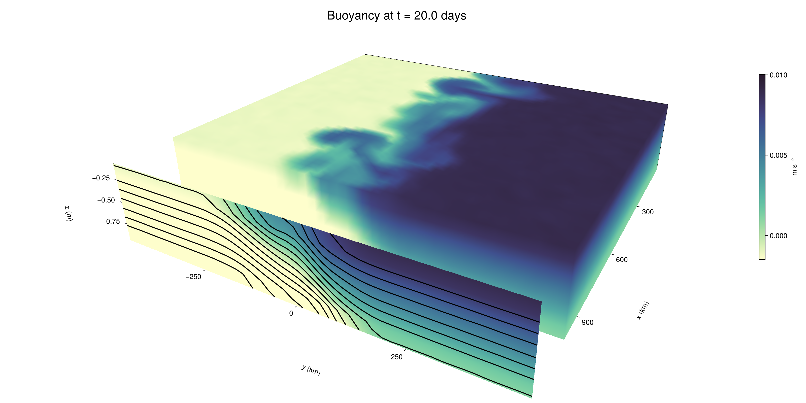

Baroclinic adjustment
In this example, we simulate the evolution and equilibration of a baroclinically unstable front.
Install dependencies
First let's make sure we have all required packages installed.
using Pkg
pkg"add Oceananigans, CairoMakie"using Oceananigans
using Oceananigans.UnitsGrid
We use a three-dimensional channel that is periodic in the x direction:
Lx = 1000kilometers # east-west extent [m]
Ly = 1000kilometers # north-south extent [m]
Lz = 1kilometers # depth [m]
grid = RectilinearGrid(size = (48, 48, 8),
x = (0, Lx),
y = (-Ly/2, Ly/2),
z = (-Lz, 0),
topology = (Periodic, Bounded, Bounded))48×48×8 RectilinearGrid{Float64, Periodic, Bounded, Bounded} on CPU with 3×3×3 halo
├── Periodic x ∈ [0.0, 1.0e6) regularly spaced with Δx=20833.3
├── Bounded y ∈ [-500000.0, 500000.0] regularly spaced with Δy=20833.3
└── Bounded z ∈ [-1000.0, 0.0] regularly spaced with Δz=125.0Model
We built a HydrostaticFreeSurfaceModel with an ImplicitFreeSurface solver. Regarding Coriolis, we use a beta-plane centered at 45° South.
model = HydrostaticFreeSurfaceModel(; grid,
coriolis = BetaPlane(latitude = -45),
buoyancy = BuoyancyTracer(),
tracers = :b,
momentum_advection = WENO(),
tracer_advection = WENO())HydrostaticFreeSurfaceModel{CPU, RectilinearGrid}(time = 0 seconds, iteration = 0)
├── grid: 48×48×8 RectilinearGrid{Float64, Periodic, Bounded, Bounded} on CPU with 3×3×3 halo
├── timestepper: QuasiAdamsBashforth2TimeStepper
├── tracers: b
├── closure: Nothing
├── buoyancy: BuoyancyTracer with ĝ = NegativeZDirection()
├── free surface: ImplicitFreeSurface with gravitational acceleration 9.80665 m s⁻²
│ └── solver: FFTImplicitFreeSurfaceSolver
├── advection scheme:
│ ├── momentum: WENO reconstruction order 5
│ └── b: WENO reconstruction order 5
└── coriolis: BetaPlane{Float64}We start our simulation from rest with a baroclinically unstable buoyancy distribution. We use ramp(y, Δy), defined below, to specify a front with width Δy and horizontal buoyancy gradient M². We impose the front on top of a vertical buoyancy gradient N² and a bit of noise.
"""
ramp(y, Δy)
Linear ramp from 0 to 1 between -Δy/2 and +Δy/2.
For example:
```
y < -Δy/2 => ramp = 0
-Δy/2 < y < -Δy/2 => ramp = y / Δy
y > Δy/2 => ramp = 1
```
"""
ramp(y, Δy) = min(max(0, y/Δy + 1/2), 1)
N² = 1e-5 # [s⁻²] buoyancy frequency / stratification
M² = 1e-7 # [s⁻²] horizontal buoyancy gradient
Δy = 100kilometers # width of the region of the front
Δb = Δy * M² # buoyancy jump associated with the front
ϵb = 1e-2 * Δb # noise amplitude
bᵢ(x, y, z) = N² * z + Δb * ramp(y, Δy) + ϵb * randn()
set!(model, b=bᵢ)Let's visualize the initial buoyancy distribution.
using CairoMakie
# Build coordinates with units of kilometers
x, y, z = 1e-3 .* nodes(grid, (Center(), Center(), Center()))
b = model.tracers.b
fig, ax, hm = heatmap(view(b, 1, :, :),
colormap = :deep,
axis = (xlabel = "y [km]",
ylabel = "z [km]",
title = "b(x=0, y, z, t=0)",
titlesize = 24))
Colorbar(fig[1, 2], hm, label = "[m s⁻²]")
fig
Simulation
Now let's build a Simulation.
simulation = Simulation(model, Δt=20minutes, stop_time=20days)Simulation of HydrostaticFreeSurfaceModel{CPU, RectilinearGrid}(time = 0 seconds, iteration = 0)
├── Next time step: 20 minutes
├── Elapsed wall time: 0 seconds
├── Wall time per iteration: NaN days
├── Stop time: 20 days
├── Stop iteration : Inf
├── Wall time limit: Inf
├── Callbacks: OrderedDict with 4 entries:
│ ├── stop_time_exceeded => Callback of stop_time_exceeded on IterationInterval(1)
│ ├── stop_iteration_exceeded => Callback of stop_iteration_exceeded on IterationInterval(1)
│ ├── wall_time_limit_exceeded => Callback of wall_time_limit_exceeded on IterationInterval(1)
│ └── nan_checker => Callback of NaNChecker for u on IterationInterval(100)
├── Output writers: OrderedDict with no entries
└── Diagnostics: OrderedDict with no entriesWe add a TimeStepWizard callback to adapt the simulation's time-step,
conjure_time_step_wizard!(simulation, IterationInterval(20), cfl=0.2, max_Δt=20minutes)Also, we add a callback to print a message about how the simulation is going,
using Printf
wall_clock = Ref(time_ns())
function print_progress(sim)
u, v, w = model.velocities
progress = 100 * (time(sim) / sim.stop_time)
elapsed = (time_ns() - wall_clock[]) / 1e9
@printf("[%05.2f%%] i: %d, t: %s, wall time: %s, max(u): (%6.3e, %6.3e, %6.3e) m/s, next Δt: %s\n",
progress, iteration(sim), prettytime(sim), prettytime(elapsed),
maximum(abs, u), maximum(abs, v), maximum(abs, w), prettytime(sim.Δt))
wall_clock[] = time_ns()
return nothing
end
add_callback!(simulation, print_progress, IterationInterval(100))Diagnostics/Output
Here, we save the buoyancy, $b$, at the edges of our domain as well as the zonal ($x$) average of buoyancy.
u, v, w = model.velocities
ζ = ∂x(v) - ∂y(u)
B = Average(b, dims=1)
U = Average(u, dims=1)
V = Average(v, dims=1)
filename = "baroclinic_adjustment"
save_fields_interval = 0.5day
slicers = (east = (grid.Nx, :, :),
north = (:, grid.Ny, :),
bottom = (:, :, 1),
top = (:, :, grid.Nz))
for side in keys(slicers)
indices = slicers[side]
simulation.output_writers[side] = JLD2OutputWriter(model, (; b, ζ);
filename = filename * "_$(side)_slice",
schedule = TimeInterval(save_fields_interval),
overwrite_existing = true,
indices)
end
simulation.output_writers[:zonal] = JLD2OutputWriter(model, (; b=B, u=U, v=V);
filename = filename * "_zonal_average",
schedule = TimeInterval(save_fields_interval),
overwrite_existing = true)JLD2OutputWriter scheduled on TimeInterval(12 hours):
├── filepath: baroclinic_adjustment_zonal_average.jld2
├── 3 outputs: (b, u, v)
├── array type: Array{Float64}
├── including: [:grid, :coriolis, :buoyancy, :closure]
├── file_splitting: NoFileSplitting
└── file size: 31.6 KiBNow we're ready to run.
@info "Running the simulation..."
run!(simulation)
@info "Simulation completed in " * prettytime(simulation.run_wall_time)[ Info: Running the simulation...
[ Info: Initializing simulation...
[00.00%] i: 0, t: 0 seconds, wall time: 29.305 seconds, max(u): (0.000e+00, 0.000e+00, 0.000e+00) m/s, next Δt: 20 minutes
[ Info: ... simulation initialization complete (29.218 seconds)
[ Info: Executing initial time step...
[ Info: ... initial time step complete (18.647 seconds).
[06.94%] i: 100, t: 1.389 days, wall time: 38.605 seconds, max(u): (1.334e-01, 1.163e-01, 1.559e-03) m/s, next Δt: 20 minutes
[13.89%] i: 200, t: 2.778 days, wall time: 963.145 ms, max(u): (2.138e-01, 1.770e-01, 1.716e-03) m/s, next Δt: 20 minutes
[20.83%] i: 300, t: 4.167 days, wall time: 952.918 ms, max(u): (3.020e-01, 2.751e-01, 1.805e-03) m/s, next Δt: 20 minutes
[27.78%] i: 400, t: 5.556 days, wall time: 1.065 seconds, max(u): (3.821e-01, 3.427e-01, 1.894e-03) m/s, next Δt: 20 minutes
[34.72%] i: 500, t: 6.944 days, wall time: 1.078 seconds, max(u): (4.956e-01, 4.989e-01, 1.908e-03) m/s, next Δt: 20 minutes
[41.67%] i: 600, t: 8.333 days, wall time: 966.804 ms, max(u): (5.914e-01, 7.890e-01, 2.928e-03) m/s, next Δt: 20 minutes
[48.61%] i: 700, t: 9.722 days, wall time: 901.371 ms, max(u): (9.060e-01, 1.041e+00, 3.209e-03) m/s, next Δt: 20 minutes
[55.56%] i: 800, t: 11.111 days, wall time: 875.418 ms, max(u): (1.292e+00, 1.194e+00, 4.620e-03) m/s, next Δt: 20 minutes
[62.50%] i: 900, t: 12.500 days, wall time: 965.679 ms, max(u): (1.468e+00, 1.032e+00, 4.962e-03) m/s, next Δt: 20 minutes
[69.44%] i: 1000, t: 13.889 days, wall time: 930.465 ms, max(u): (1.368e+00, 1.056e+00, 4.123e-03) m/s, next Δt: 20 minutes
[76.39%] i: 1100, t: 15.278 days, wall time: 978.007 ms, max(u): (1.305e+00, 1.018e+00, 2.512e-03) m/s, next Δt: 20 minutes
[83.33%] i: 1200, t: 16.667 days, wall time: 937.759 ms, max(u): (1.263e+00, 1.033e+00, 2.845e-03) m/s, next Δt: 20 minutes
[90.28%] i: 1300, t: 18.056 days, wall time: 909.018 ms, max(u): (1.346e+00, 1.188e+00, 2.764e-03) m/s, next Δt: 20 minutes
[97.22%] i: 1400, t: 19.444 days, wall time: 947.584 ms, max(u): (1.263e+00, 1.156e+00, 2.266e-03) m/s, next Δt: 20 minutes
[ Info: Simulation is stopping after running for 1.078 minutes.
[ Info: Simulation time 20 days equals or exceeds stop time 20 days.
[ Info: Simulation completed in 1.079 minutes
Visualization
All that's left is to make a pretty movie. Actually, we make two visualizations here. First, we illustrate how to make a 3D visualization with Makie's Axis3 and Makie.surface. Then we make a movie in 2D. We use CairoMakie in this example, but note that using GLMakie is more convenient on a system with OpenGL, as figures will be displayed on the screen.
using CairoMakieThree-dimensional visualization
We load the saved buoyancy output on the top, north, and east surface as FieldTimeSerieses.
filename = "baroclinic_adjustment"
sides = keys(slicers)
slice_filenames = NamedTuple(side => filename * "_$(side)_slice.jld2" for side in sides)
b_timeserieses = (east = FieldTimeSeries(slice_filenames.east, "b"),
north = FieldTimeSeries(slice_filenames.north, "b"),
top = FieldTimeSeries(slice_filenames.top, "b"))
B_timeseries = FieldTimeSeries(filename * "_zonal_average.jld2", "b")
times = B_timeseries.times
grid = B_timeseries.grid48×48×8 RectilinearGrid{Float64, Periodic, Bounded, Bounded} on CPU with 3×3×3 halo
├── Periodic x ∈ [0.0, 1.0e6) regularly spaced with Δx=20833.3
├── Bounded y ∈ [-500000.0, 500000.0] regularly spaced with Δy=20833.3
└── Bounded z ∈ [-1000.0, 0.0] regularly spaced with Δz=125.0We build the coordinates. We rescale horizontal coordinates to kilometers.
xb, yb, zb = nodes(b_timeserieses.east)
xb = xb ./ 1e3 # convert m -> km
yb = yb ./ 1e3 # convert m -> km
Nx, Ny, Nz = size(grid)
x_xz = repeat(x, 1, Nz)
y_xz_north = y[end] * ones(Nx, Nz)
z_xz = repeat(reshape(z, 1, Nz), Nx, 1)
x_yz_east = x[end] * ones(Ny, Nz)
y_yz = repeat(y, 1, Nz)
z_yz = repeat(reshape(z, 1, Nz), grid.Ny, 1)
x_xy = x
y_xy = y
z_xy_top = z[end] * ones(grid.Nx, grid.Ny)Then we create a 3D axis. We use zonal_slice_displacement to control where the plot of the instantaneous zonal average flow is located.
fig = Figure(size = (1600, 800))
zonal_slice_displacement = 1.2
ax = Axis3(fig[2, 1],
aspect=(1, 1, 1/5),
xlabel = "x (km)",
ylabel = "y (km)",
zlabel = "z (m)",
xlabeloffset = 100,
ylabeloffset = 100,
zlabeloffset = 100,
limits = ((x[1], zonal_slice_displacement * x[end]), (y[1], y[end]), (z[1], z[end])),
elevation = 0.45,
azimuth = 6.8,
xspinesvisible = false,
zgridvisible = false,
protrusions = 40,
perspectiveness = 0.7)Axis3()We use data from the final savepoint for the 3D plot. Note that this plot can easily be animated by using Makie's Observable. To dive into Observables, check out Makie.jl's Documentation.
n = length(times)41Now let's make a 3D plot of the buoyancy and in front of it we'll use the zonally-averaged output to plot the instantaneous zonal-average of the buoyancy.
b_slices = (east = interior(b_timeserieses.east[n], 1, :, :),
north = interior(b_timeserieses.north[n], :, 1, :),
top = interior(b_timeserieses.top[n], :, :, 1))
# Zonally-averaged buoyancy
B = interior(B_timeseries[n], 1, :, :)
clims = 1.1 .* extrema(b_timeserieses.top[n][:])
kwargs = (colorrange=clims, colormap=:deep, shading=NoShading)
surface!(ax, x_yz_east, y_yz, z_yz; color = b_slices.east, kwargs...)
surface!(ax, x_xz, y_xz_north, z_xz; color = b_slices.north, kwargs...)
surface!(ax, x_xy, y_xy, z_xy_top; color = b_slices.top, kwargs...)
sf = surface!(ax, zonal_slice_displacement .* x_yz_east, y_yz, z_yz; color = B, kwargs...)
contour!(ax, y, z, B; transformation = (:yz, zonal_slice_displacement * x[end]),
levels = 15, linewidth = 2, color = :black)
Colorbar(fig[2, 2], sf, label = "m s⁻²", height = Relative(0.4), tellheight=false)
title = "Buoyancy at t = " * string(round(times[n] / day, digits=1)) * " days"
fig[1, 1:2] = Label(fig, title; fontsize = 24, tellwidth = false, padding = (0, 0, -120, 0))
rowgap!(fig.layout, 1, Relative(-0.2))
colgap!(fig.layout, 1, Relative(-0.1))
save("baroclinic_adjustment_3d.png", fig)
Two-dimensional movie
We make a 2D movie that shows buoyancy $b$ and vertical vorticity $ζ$ at the surface, as well as the zonally-averaged zonal and meridional velocities $U$ and $V$ in the $(y, z)$ plane. First we load the FieldTimeSeries and extract the additional coordinates we'll need for plotting
ζ_timeseries = FieldTimeSeries(slice_filenames.top, "ζ")
U_timeseries = FieldTimeSeries(filename * "_zonal_average.jld2", "u")
B_timeseries = FieldTimeSeries(filename * "_zonal_average.jld2", "b")
V_timeseries = FieldTimeSeries(filename * "_zonal_average.jld2", "v")
xζ, yζ, zζ = nodes(ζ_timeseries)
yv = ynodes(V_timeseries)
xζ = xζ ./ 1e3 # convert m -> km
yζ = yζ ./ 1e3 # convert m -> km
yv = yv ./ 1e3 # convert m -> km49-element Vector{Float64}:
-500.0
-479.1666666666667
-458.3333333333333
-437.5
-416.6666666666667
-395.8333333333333
-375.0
-354.1666666666667
-333.3333333333333
-312.5
-291.6666666666667
-270.8333333333333
-250.0
-229.16666666666666
-208.33333333333334
-187.5
-166.66666666666666
-145.83333333333334
-125.0
-104.16666666666667
-83.33333333333333
-62.5
-41.666666666666664
-20.833333333333332
0.0
20.833333333333332
41.666666666666664
62.5
83.33333333333333
104.16666666666667
125.0
145.83333333333334
166.66666666666666
187.5
208.33333333333334
229.16666666666666
250.0
270.8333333333333
291.6666666666667
312.5
333.3333333333333
354.1666666666667
375.0
395.8333333333333
416.6666666666667
437.5
458.3333333333333
479.1666666666667
500.0Next, we set up a plot with 4 panels. The top panels are large and square, while the bottom panels get a reduced aspect ratio through rowsize!.
set_theme!(Theme(fontsize=24))
fig = Figure(size=(1800, 1000))
axb = Axis(fig[1, 2], xlabel="x (km)", ylabel="y (km)", aspect=1)
axζ = Axis(fig[1, 3], xlabel="x (km)", ylabel="y (km)", aspect=1, yaxisposition=:right)
axu = Axis(fig[2, 2], xlabel="y (km)", ylabel="z (m)")
axv = Axis(fig[2, 3], xlabel="y (km)", ylabel="z (m)", yaxisposition=:right)
rowsize!(fig.layout, 2, Relative(0.3))To prepare a plot for animation, we index the timeseries with an Observable,
n = Observable(1)
b_top = @lift interior(b_timeserieses.top[$n], :, :, 1)
ζ_top = @lift interior(ζ_timeseries[$n], :, :, 1)
U = @lift interior(U_timeseries[$n], 1, :, :)
V = @lift interior(V_timeseries[$n], 1, :, :)
B = @lift interior(B_timeseries[$n], 1, :, :)Observable([-0.009354237967602506 -0.008132182043246939 -0.006868331691630537 -0.005592966118607094 -0.004371811198056494 -0.003098545716909674 -0.0018493620603557976 -0.0006239515188207939; -0.009374109876071507 -0.00812961779794325 -0.006886510785366555 -0.005636639459352867 -0.00439671157366872 -0.003109380060135657 -0.0018626750290091653 -0.0006546527271895445; -0.009368296053660624 -0.008143085902300819 -0.006900346690912706 -0.005613031811031485 -0.0043783556647185775 -0.003105532938494092 -0.0018906521774372006 -0.0006286205009023758; -0.009368345115486816 -0.008135904445175857 -0.0068837656244512295 -0.005605955344534401 -0.004349395352517476 -0.0031058992091935692 -0.0018905991409113648 -0.0006243895532812603; -0.009398338298500366 -0.00812627822993124 -0.006866954355037369 -0.005627179643760231 -0.004385241166731499 -0.0031204870322636274 -0.0018987086694365752 -0.0006236996842666837; -0.009368337638042842 -0.008119291285122643 -0.0068596730290712395 -0.005623072005791721 -0.004379361873808174 -0.0031244752181620594 -0.001860364411250174 -0.0006382839695169164; -0.009346982472579058 -0.008110770369462603 -0.006901042402379071 -0.00561463369843686 -0.004357330165674473 -0.003107307512001191 -0.0018849696892064593 -0.0006190585726395801; -0.009369932504633716 -0.008139439742434444 -0.006871961030503669 -0.0056213518596850255 -0.004358319758112191 -0.0031188955963992616 -0.0018729126026952685 -0.0006136450095322217; -0.009346143244765666 -0.0081275685378226 -0.006876766695468353 -0.005599477164565335 -0.0043851386835135975 -0.0031462565153694056 -0.0019053590199896986 -0.000661524313747509; -0.009357953797524738 -0.008126498494097517 -0.006875558211115882 -0.0056282247528579715 -0.004345923727036997 -0.003128687771895591 -0.0018493762238232072 -0.00061432946717885; -0.009391357182391957 -0.008119368886654222 -0.006867520108571441 -0.005616955156409288 -0.004380880486710412 -0.0031282502102413317 -0.0018885825593790003 -0.000605817918941804; -0.009354909729857037 -0.00808862966913569 -0.006885976213266369 -0.005673152884721319 -0.004378868939464336 -0.0031233213297505655 -0.0018793919114955078 -0.000642766970608337; -0.009369712090142443 -0.00811573983085716 -0.006891209503305959 -0.005604120276639796 -0.004356892446291743 -0.003138147815022438 -0.0018905598223962615 -0.0006142265702571825; -0.009362729342953287 -0.008108374951226002 -0.0068683046546344105 -0.0056262280786858465 -0.0043727630428796 -0.0031166697378069113 -0.0018935350284407114 -0.0006256925205206026; -0.009388268157242625 -0.008128421487958342 -0.006854058255216333 -0.005631781263597366 -0.004371505180091537 -0.0031236005088775016 -0.0018662104147134971 -0.0006286261980542368; -0.009364333217244858 -0.008140966853665658 -0.00686920853402391 -0.005622953874824657 -0.004372196413301111 -0.0031423073657762756 -0.0018449886347351484 -0.0006243419950591817; -0.009353756141464458 -0.008100036594699359 -0.00686991172529183 -0.005644506527803364 -0.004383933014707713 -0.003103513302658512 -0.0018754658921462154 -0.0006163509862194564; -0.009370863117438346 -0.008146325654282293 -0.006888144999170952 -0.005599081523312836 -0.004351073726464099 -0.0031311826925188393 -0.001895580753959153 -0.0006272579078048988; -0.009382723139548826 -0.008125084244483362 -0.006874617420566037 -0.00565801684127852 -0.004384779371789614 -0.003144761031265105 -0.0018783947775338414 -0.0006123659802430022; -0.009349783709050765 -0.008115291463706509 -0.006863530279950182 -0.005632690683052821 -0.004367210255956945 -0.0031336566209593723 -0.0018697196069217131 -0.0006046309115260658; -0.009377213843398405 -0.008137546078314628 -0.006873132335975203 -0.005640671985720806 -0.004389620456762751 -0.003118025141235318 -0.001882025242213107 -0.0006251926170402407; -0.009376203506378971 -0.00813024217356366 -0.006864243149171574 -0.005631563061498398 -0.004370555201110301 -0.0031091560886443727 -0.001884678604098522 -0.0006242323921020889; -0.007493439055133634 -0.006260841548851401 -0.005008270448775454 -0.0037374724194984507 -0.0024967180718290633 -0.0012486307491575766 -1.163161663455516e-5 0.0012790403058687498; -0.005384026936311786 -0.004152125242059704 -0.0029035694103996187 -0.001688107008225475 -0.000425774914444453 0.0008416418592830441 0.002072347068003983 0.0033451830169041546; -0.003335222204521754 -0.002061219536131335 -0.0008411198704844493 0.0004120757616524534 0.0016794271185223096 0.0029146235966961806 0.004154976666218005 0.0054164620680294895; -0.0012242756249927075 -1.5036520777536686e-5 0.0012705805927659998 0.0024747341151310333 0.0037378800262238185 0.0049888460036360835 0.006235320298404232 0.007508864001468822; 0.0006011444988706154 0.0018814231082050926 0.0031282973274830636 0.004379322991026719 0.005626632025555424 0.00686583487879788 0.008108564313661628 0.009370345974805657; 0.0006330865364322391 0.0018991009436594845 0.0031420738308558615 0.004369594219703967 0.0056186509138200546 0.006888920082741859 0.00813825325104218 0.009375837916999747; 0.0006305946678768272 0.0018655408548000259 0.003111853059244956 0.004390553225211607 0.005628714425624677 0.006868618377883685 0.008145300623574369 0.00940210119247135; 0.0006349638146774536 0.001860387704676297 0.00311039456340279 0.004369166040137437 0.005611917717373915 0.006860778009562224 0.008128495926634078 0.009393504828329765; 0.0006234540159029012 0.0018667439021291326 0.0031303769356809848 0.004392067355495649 0.005604420491681572 0.0068702503520353024 0.00813602590300786 0.009369192824488538; 0.0006082992830442304 0.001838458749285175 0.0031203903412352226 0.004363520262890876 0.005633517659794124 0.006871800392211515 0.008144521891521008 0.009390728244125903; 0.0006014479749737123 0.0018812813721637278 0.003107816269711067 0.004363555531927291 0.005611578208034517 0.006887978244874189 0.008126453848153402 0.009349258243993084; 0.0006204425473517093 0.001886324723972886 0.003129516314432052 0.004360204555270315 0.005622670608669378 0.006893024890736951 0.00811559533389408 0.009352409550140486; 0.0006209933600321446 0.001877408768339573 0.0031192149540521714 0.004371199401839776 0.00563760497341885 0.006861776911744377 0.008137750708211301 0.00937288361566664; 0.0006254450352662657 0.001847985089672212 0.003158847343496084 0.0043825419063392755 0.00559771711631938 0.0068825905268992535 0.008144149953830511 0.009361430569876353; 0.0006333957011519466 0.0018359355304643334 0.003133387127138554 0.0043672646798730485 0.005624445521142201 0.006868840671651809 0.008115641000604327 0.009383567421113936; 0.0006312345823107214 0.001896229733582218 0.003125256236808672 0.004394355685969788 0.005634694612943817 0.006885682943151468 0.008088661512733407 0.009371387087388336; 0.00060214033166258 0.0018708808584692524 0.0031341737545450034 0.004372234065395261 0.0056139053056685284 0.006870939405696057 0.008120169850021931 0.00939441090063677; 0.0006548155088418852 0.0018857442725927628 0.0031019756331077154 0.0043925948727638825 0.005642481436574026 0.006877100886729002 0.008124114178923536 0.009362087076147423; 0.0006421053904311316 0.0018848807494955629 0.003123418153856004 0.0043502439359273575 0.0056409268760970145 0.006892574396057367 0.008118428705962272 0.00936764404689342; 0.0006143017672109686 0.0018767719730942128 0.003108575583210984 0.0043665506761656646 0.005640319192097016 0.006862493076752497 0.008096413489710989 0.009386572943811695; 0.0005992512190064839 0.0019094754998620525 0.0031432352912858044 0.0043674998042694336 0.005614523694526395 0.006880326028311255 0.008122526425487733 0.009379521334218117; 0.0006269826208446311 0.0018606987701903436 0.003120930611316948 0.004372684414242164 0.005589508706443325 0.00687866773773393 0.008135597755190958 0.009370751484221429; 0.000644344019625647 0.0018986055027753544 0.003106523243486097 0.004382994886778975 0.005640884560814606 0.0068843634951620295 0.008132319311124262 0.009371137643064778; 0.0006188913507376448 0.001876305687189221 0.0031002847383568032 0.004381013779272702 0.005630090293086777 0.006862836515201633 0.008132036208403415 0.009356988158266216; 0.0006369634179493244 0.0018752628827789879 0.003118912210141512 0.004387530554287526 0.005596521020090797 0.006876150752768727 0.008117079297710899 0.009356775133033785; 0.0006284958874425232 0.0018526419218148488 0.0031197749549074436 0.004385464610769646 0.0056288111149237355 0.0068691480612370045 0.008126209365245425 0.009384227382414623])
and then build our plot:
hm = heatmap!(axb, xb, yb, b_top, colorrange=(0, Δb), colormap=:thermal)
Colorbar(fig[1, 1], hm, flipaxis=false, label="Surface b(x, y) (m s⁻²)")
hm = heatmap!(axζ, xζ, yζ, ζ_top, colorrange=(-5e-5, 5e-5), colormap=:balance)
Colorbar(fig[1, 4], hm, label="Surface ζ(x, y) (s⁻¹)")
hm = heatmap!(axu, yb, zb, U; colorrange=(-5e-1, 5e-1), colormap=:balance)
Colorbar(fig[2, 1], hm, flipaxis=false, label="Zonally-averaged U(y, z) (m s⁻¹)")
contour!(axu, yb, zb, B; levels=15, color=:black)
hm = heatmap!(axv, yv, zb, V; colorrange=(-1e-1, 1e-1), colormap=:balance)
Colorbar(fig[2, 4], hm, label="Zonally-averaged V(y, z) (m s⁻¹)")
contour!(axv, yb, zb, B; levels=15, color=:black)Finally, we're ready to record the movie.
frames = 1:length(times)
record(fig, filename * ".mp4", frames, framerate=8) do i
n[] = i
endThis page was generated using Literate.jl.